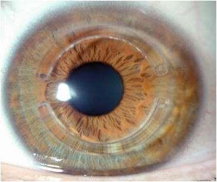
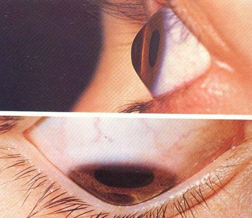
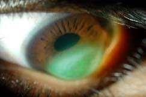

Cornea · Keratoconus (Conical cornea)
Differential diagnosis and treatment
Differential diagnosis: ectatic conditions of the cornea.
- Keratoectasia.
- Anterior staphyloma.
- Keratoglobus.
Treatment:
- General: Good diet, vitamins, tonics, Correct any endocrinal disturbances.
- Local:
- Spectacle correction: may help in very early cases.
- Hard and rigid gas permeable contact lenses correct the myopic irregular astigmatism as it cancels the power of the cornea.
- Corneal Collagen Cross-Linking (CXL) is indicated to stop the progression.
- Intrastromal Corneal Ring Segments (ICRS) are indicated when the patients are intolerant to spectacles or contact lenses.
- Penetrating keratoplasty if:
- Glasses or the contact lens fail to correct the vision.
- Opacities are at the apex of the cornea.


